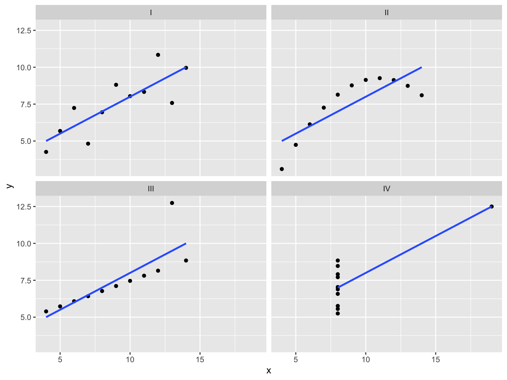
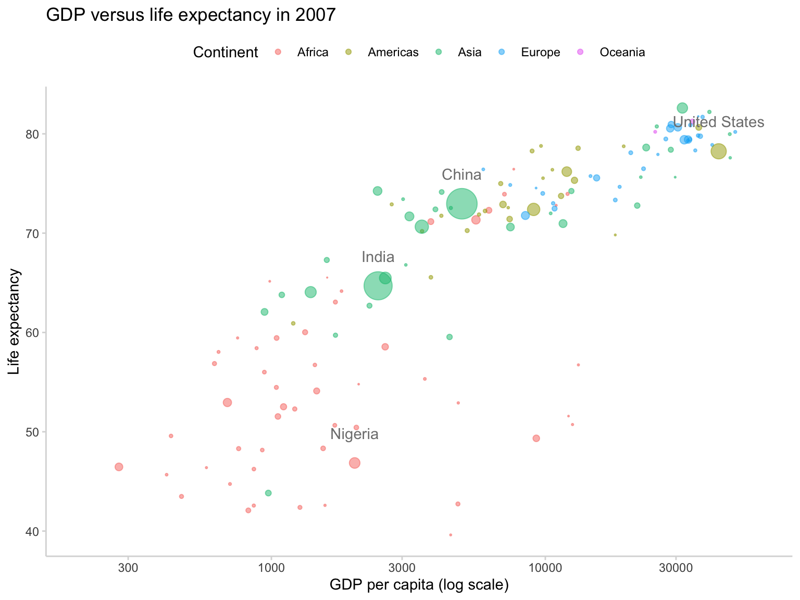

Designing Effective Data Visualizations
UC Berkeley Library
October 2018
Goals
- Why Visualize?
- Design Considerations
- Resources
- Jupyter Notebook
- Hands-on critique activity
Why Visualize?
Why Visualize?
Why Visualize?

Why Visualize?
Explore (Descriptive)

Anscombe’s Quartet
head(anscombe)## x1 x2 x3 x4 y1 y2 y3 y4
## 1 10 10 10 8 8.04 9.14 7.46 6.58
## 2 8 8 8 8 6.95 8.14 6.77 5.76
## 3 13 13 13 8 7.58 8.74 12.74 7.71
## 4 9 9 9 8 8.81 8.77 7.11 8.84
## 5 11 11 11 8 8.33 9.26 7.81 8.47
## 6 14 14 14 8 9.96 8.10 8.84 7.04Anscombe’s Quartet
summary(anscombe)## x1 x2 x3 x4
## Min. : 4.0 Min. : 4.0 Min. : 4.0 Min. : 8
## 1st Qu.: 6.5 1st Qu.: 6.5 1st Qu.: 6.5 1st Qu.: 8
## Median : 9.0 Median : 9.0 Median : 9.0 Median : 8
## Mean : 9.0 Mean : 9.0 Mean : 9.0 Mean : 9
## 3rd Qu.:11.5 3rd Qu.:11.5 3rd Qu.:11.5 3rd Qu.: 8
## Max. :14.0 Max. :14.0 Max. :14.0 Max. :19
## y1 y2 y3 y4
## Min. : 4.260 Min. :3.100 Min. : 5.39 Min. : 5.250
## 1st Qu.: 6.315 1st Qu.:6.695 1st Qu.: 6.25 1st Qu.: 6.170
## Median : 7.580 Median :8.140 Median : 7.11 Median : 7.040
## Mean : 7.501 Mean :7.501 Mean : 7.50 Mean : 7.501
## 3rd Qu.: 8.570 3rd Qu.:8.950 3rd Qu.: 7.98 3rd Qu.: 8.190
## Max. :10.840 Max. :9.260 Max. :12.74 Max. :12.500Anscombe’s Quartet

Moral of the story…
- look at your data 👀
Design
Data Visualization Process
getting data
getting to know the data
setting goals
determining if a visualization is needed
deciding what to visualize
cleaning
visualizing
designing
exporting/embedding for presentation
Basic Design Considerations
Color Hue
Area
Shape
Color
Seqential: Progression from low to high
Color

Color
Categorical: Differentiate categories. No implicit value or magnitude implied.

Color

Color
Divergent: Sequential progressions in opposite directions
Color

Color
Color
Color

Color
Color

Area - Color
Circle area = Population
Color-Area-Text
…and reducing complexity

(Some) Characteristics of Bad Visualizations
- …but you should use your own judgement
Design
Cutting the y-axis

Design
Differences look much smaller with full y-axis
Design
Humans are bad at reading angles.
Design

Design
Visual complexity

Design
Visual complexity

Critique a visualization
Jupyter Notebook
Tools for Visualization
Code-Based
Graphical User Interface (Point and Click)
Excel
Numbers
Resources for Visualization
Takeaways
Data Visualization can raise questions about your data you didn’t know you had
Critical for communicating information in ways that statistics and words alone cannot
Regardless of the tool you use, there are core principles in designing effective visualizations
Like writing a research paper, the process of data analysis is iterative
Ultimately, you (the researcher) has the power to determine what gets communicated visually